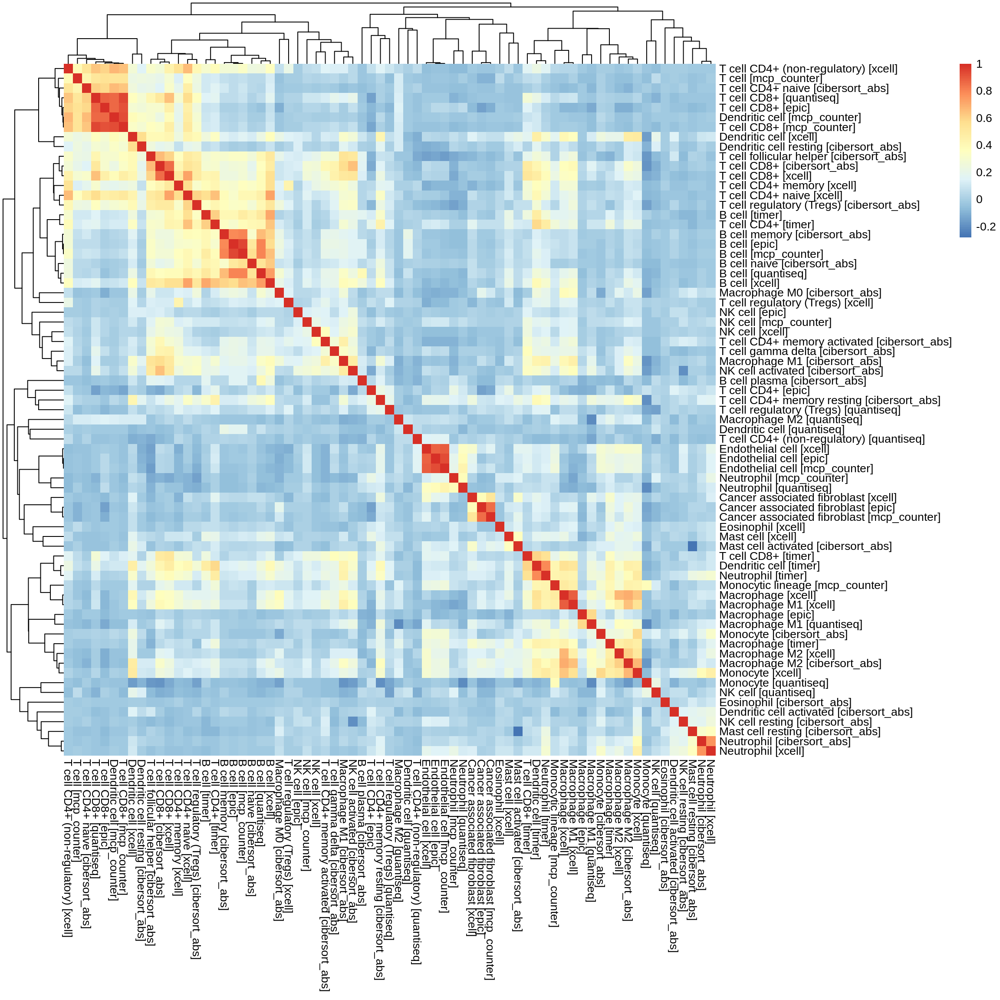
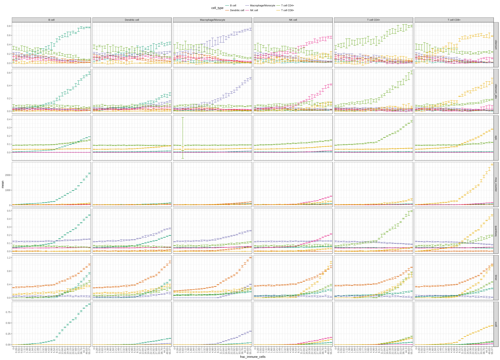
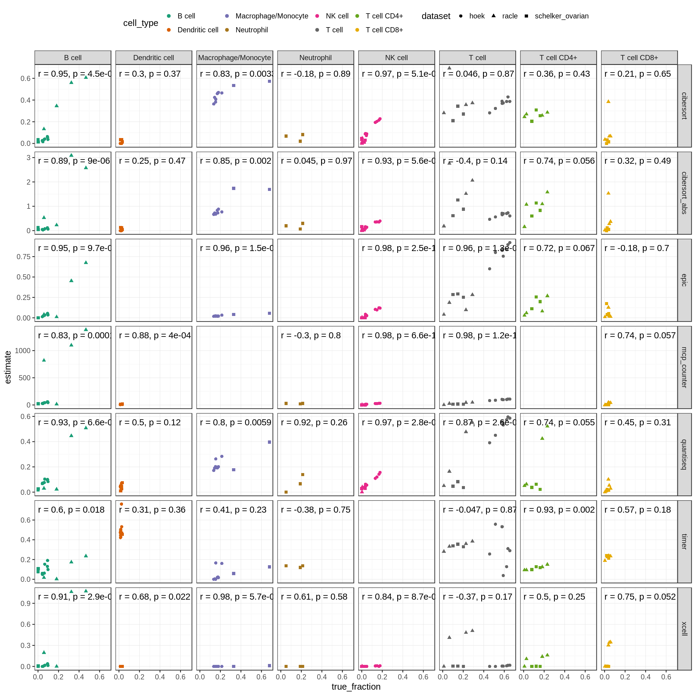
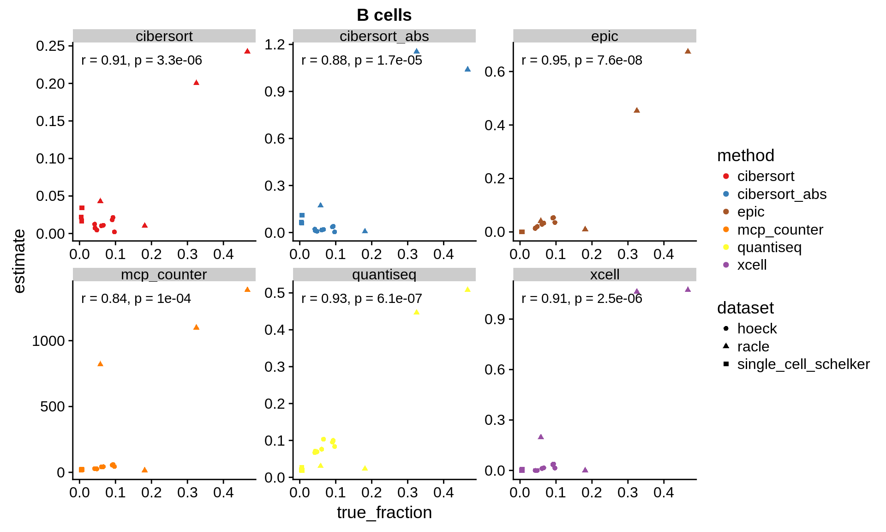

5 Mixing study
In this chapter, we will use single cell data from (Schelker et al. 2017) to create simulated bulk RNAseq samples of which we know the true cell proportions. We futher use these samples to benchmark the performance of different recently published immune deconvolution tools.
5.1 Average fraction of tumour cells
To obtain representatitive simulated samples, we are interested in the average fraction of tumour cells vs immune cells in a mixture.
cell_type_table = pData(single_cell_schelker2) %>%
filter(source %in% c("melanoma", "ascites")) %>%
mutate(sample=paste(source, donor, sep="_")) %>%
group_by(source, sample, cell_type) %>%
summarise(n=n()) %>%
mutate(freq=n/sum(n))
ggplot(cell_type_table, aes(x=sample, y=freq)) +
geom_bar(aes(fill=cell_type), stat="identity") +
theme(axis.text.x=element_text(angle = 90, vjust = 0.5, hjust=1)) +
scale_fill_manual(values=color_scales$cell_types)
cancer_cells = cell_type_table %>%
filter(cell_type %in% c("Melanoma cells", "Ovarian carcinoma cells"))
cancer_cell_param = MASS::fitdistr(cancer_cells$freq, "normal")5.2 Create simulated bulk tissues
The fractions of a sample are randomly assigned in the following procedure:
- Draw a random tumour cell content from the distribution fitted above
- The first half of the samples will use melanoma cells, the second half ovarian cancer cells.
- Assign the remaining fraction (=not cancer cells) randomly to the remaining cell types (B cells, CD8+ T cells, Melanoma cells, CD4+ T cells, Macrophages/Monocytes, regulatory T cells, Cancer associated fibroblasts, Dendritic cells, Endothelial cells, Natural killer cells, Ovarian carcinoma cells)
set.seed(42)
cancer_cells = c("Melanoma cells", "Ovarian carcinoma cells")
immune_cells = available_cell_types[!(available_cell_types %in% cancer_cells)]
is_melanoma = c(rep(TRUE, 50), rep(FALSE, 50))
cell_fractions = lapply(is_melanoma, function(melanoma) {
cancer_fraction = rnorm(1, mean=cancer_cell_param$estimate[1], sd=cancer_cell_param$estimate[2])
cancer_fraction = ifelse(cancer_fraction < 0, 0, cancer_fraction)
cancer_fraction = ifelse(cancer_fraction > 1, 1, cancer_fraction)
# associate fraction randomly ot Melanoma or Ovarian
if(melanoma) {
cancer_fractions = list(cancer_fraction, 0)
} else {
cancer_fractions = list(0, cancer_fraction)
}
names(cancer_fractions) = cancer_cells
# compute random fractions for other cells
remaining_fraction = 1 - cancer_fraction
rnd = sample(0:100, length(immune_cells), TRUE)
tmp_fractions = (remaining_fraction * rnd) / sum(rnd)
names(tmp_fractions) = immune_cells
c(cancer_fractions, tmp_fractions)
}) %>% bind_rows()
testthat::test_that("all fractions sum up to 1", expect_equal(apply(cell_fractions, 1, sum), rep(1, 100)))set.seed(42)
bulk_eset = make_bulk_eset(eset=single_cell_schelker2, cell_fractions = cell_fractions, n_cells=500)5.3 Run the deconvolution
We first run all methods that are integrated in the immune_deconvolution_methods are package automatically in a loop.
all_results = lapply(immunedeconv::deconvolution_methods, function(method) {
deconvolute(bulk_eset, method, column="gene_symbol") %>%
mutate(method=method)
})## Warning in EPIC::EPIC(bulk = gene_expression_matrix, ...): The optimization didn't fully converge for some samples:
## value4; value5; value7; value34; value51; value62; value64; value66; value78
## - check fit.gof for the convergeCode and convergeMessage## Warning in EPIC::EPIC(bulk = gene_expression_matrix, ...): mRNA_cell value
## unknown for some cell types: CAFs, Endothelial - using the default value of
## 0.4 for these but this might bias the true cell proportions from all cell
## types.##
## Running quanTIseq deconvolution module## Gene expression normalization and re-annotation (arrays: FALSE)## Removing 17 noisy genes## Signature genes found in data set: 140/153 (91.5%)## Mixture deconvolution (method: lsei)## Deconvolution sucessful!## [1] "Num. of genes: 10462"
## Estimating ssGSEA scores for 489 gene sets.
##
|
| | 0%Using parallel with 4 cores
##
|
|= | 1%
|
|= | 2%
|
|== | 3%
|
|=== | 4%
|
|=== | 5%
|
|==== | 6%
|
|===== | 7%
|
|===== | 8%
|
|====== | 9%
|
|====== | 10%
|
|======= | 11%
|
|======== | 12%
|
|======== | 13%
|
|========= | 14%
|
|========== | 15%
|
|========== | 16%
|
|=========== | 17%
|
|============ | 18%
|
|============ | 19%
|
|============= | 20%
|
|============== | 21%
|
|============== | 22%
|
|=============== | 23%
|
|================ | 24%
|
|================ | 25%
|
|================= | 26%
|
|================== | 27%
|
|================== | 28%
|
|=================== | 29%
|
|==================== | 30%
|
|==================== | 31%
|
|===================== | 32%
|
|===================== | 33%
|
|====================== | 34%
|
|======================= | 35%
|
|======================= | 36%
|
|======================== | 37%
|
|========================= | 38%
|
|========================= | 39%
|
|========================== | 40%
|
|=========================== | 41%
|
|=========================== | 42%
|
|============================ | 43%
|
|============================= | 44%
|
|============================= | 45%
|
|============================== | 46%
|
|=============================== | 47%
|
|=============================== | 48%
|
|================================ | 49%
|
|================================ | 50%
|
|================================= | 51%
|
|================================== | 52%
|
|================================== | 53%
|
|=================================== | 54%
|
|==================================== | 55%
|
|==================================== | 56%
|
|===================================== | 57%
|
|====================================== | 58%
|
|====================================== | 59%
|
|======================================= | 60%
|
|======================================== | 61%
|
|======================================== | 62%
|
|========================================= | 63%
|
|========================================== | 64%
|
|========================================== | 65%
|
|=========================================== | 66%
|
|============================================ | 67%
|
|============================================ | 68%
|
|============================================= | 69%
|
|============================================== | 70%
|
|============================================== | 71%
|
|=============================================== | 72%
|
|=============================================== | 73%
|
|================================================ | 74%
|
|================================================= | 75%
|
|================================================= | 76%
|
|================================================== | 77%
|
|=================================================== | 78%
|
|=================================================== | 79%
|
|==================================================== | 80%
|
|===================================================== | 81%
|
|===================================================== | 82%
|
|====================================================== | 83%
|
|======================================================= | 84%
|
|======================================================= | 85%
|
|======================================================== | 86%
|
|========================================================= | 87%
|
|========================================================= | 88%
|
|========================================================== | 89%
|
|========================================================== | 90%
|
|=========================================================== | 91%
|
|============================================================ | 92%
|
|============================================================ | 93%
|
|============================================================= | 94%
|
|============================================================== | 95%
|
|============================================================== | 96%
|
|=============================================================== | 97%
|
|================================================================ | 98%
|
|================================================================ | 99%
|
|=================================================================| 100%5.3.1 run TIMER
TIMER (B. Li et al. 2016) is only available as a web resource. Moreover, the algorithm is adapted for each cancer type, so that we have to choose the corresponding option (Melanoma/Ovarian) when running the algorithm.
We therefore export the data required to run the algorithm and re-import the results obtained from the web-tool.
eset_mat = eset_to_matrix(bulk_eset, "gene_symbol")
immunedeconv::export_for_timer(eset_mat[,is_melanoma], path="../results/timer_input_melanoma.tsv")
immunedeconv::export_for_timer(eset_mat[,!is_melanoma], path="../results/timer_input_ovarian.tsv")
res_timer_melanoma = immunedeconv::import_from_timer("../data/timer/timer_result_melanoma.csv")## Parsed with column specification:
## cols(
## sampleID = col_character(),
## B_cell = col_double(),
## T_cell.CD4 = col_double(),
## T_cell.CD8 = col_double(),
## Neutrophil = col_double(),
## Macrophage = col_double(),
## DC = col_double()
## )res_timer_ovarian = immunedeconv::import_from_timer("../data/timer/timer_result_ovarian.csv")## Parsed with column specification:
## cols(
## sampleID = col_character(),
## B_cell = col_double(),
## T_cell.CD4 = col_double(),
## T_cell.CD8 = col_double(),
## Neutrophil = col_double(),
## Macrophage = col_double(),
## DC = col_double()
## )res_timer = inner_join(res_timer_melanoma, res_timer_ovarian, by="cell_type") %>%
mutate(method="timer")abs_methods = c("cibersort_abs", "epic", "quantiseq", "xcell")5.4 Results
Here, we map the results back to the “gold standard”. We aggregate the results of the different methods into a single table and clean it up for further processing.
all_results2 = all_results %>%
c(list(res_timer))
# summarise cell_types from the method that only map to a single cell_type in the reference dataset (namely monocytes and macrophages)
all_results3 = lapply(all_results2, function(res) {
res %>%
map_results_to_dataset("single_cell_schelker") %>%
group_by(method, single_cell_schelker) %>%
summarise_all(funs(sum))
})
all_results_tidy = all_results3 %>%
bind_rows() %>%
rename(cell_type = single_cell_schelker) %>%
gather(sample, estimate, -cell_type, -method) %>%
arrange(method, cell_type, sample)
gold_standard = pData(bulk_eset) %>%
rownames_to_column("sample") %>%
gather(cell_type, true_fraction, -sample)5.4.1 Calculate “Other cells” for all absolute methods
other_cells_estimates = all_results_tidy %>%
filter(method %in% abs_methods) %>%
group_by(method, sample) %>%
summarise(cell_type="Other", estimate=max(0, 1-sum(estimate)))
other_cells_true_fractions = gold_standard %>%
inner_join(all_results_tidy %>% select(method, sample) %>% distinct(), by=c("sample")) %>%
anti_join(all_results_tidy, by=c("sample", "cell_type", "method")) %>%
group_by(method, sample) %>%
summarise(cell_type="Other", true_fraction=sum(true_fraction))all_results_tidy2 = bind_rows(all_results_tidy, other_cells_estimates)
# we need to add the methods (full join) to each cell type as
# the "Other" fractions are method specific
# (all cell types that are not predicted by the method)
gold_standard2 = gold_standard %>%
crossing(method=unique(all_results_tidy$method)) %>%
bind_rows(other_cells_true_fractions)
results_with_gold_standard = all_results_tidy2 %>%
inner_join(gold_standard2, by=c("sample", "cell_type", "method"))5.4.2 Correlation plots
results_with_gold_standard %>%
ggplot(aes(x=true_fraction, y=estimate)) +
facet_grid(method ~ cell_type, scales="free") +
geom_point() +
stat_smooth(aes(color=method), method="lm") +
scale_color_manual(values=color_scales$methods) +
scale_x_continuous(breaks=c(.2, .5))
5.4.3 Calculate correlations for each method and cell type
make_cor = function(estimate, true_fraction) {
test_res = cor.test(estimate, true_fraction, method="pearson")
data.frame(
pearson=test_res$estimate,
conf_int_lower=test_res$conf.int[1],
conf_int_upper=test_res$conf.int[2]
)
}
correlations = results_with_gold_standard %>%
group_by(cell_type, method) %>%
do(make_cor(.$estimate, .$true_fraction))
correlations %>% ggplot(aes(x=method, y=pearson)) +
geom_bar(aes(fill=method), stat="identity") +
geom_errorbar(aes(ymin=conf_int_lower, ymax=conf_int_upper), width=.2) +
facet_wrap(~cell_type, nrow=2) +
theme(axis.text.x=element_text(angle = 90, vjust = 0.5, hjust=1),
legend.position="top") +
scale_fill_manual(values=color_scales$methods)
5.4.4 Absolute error for all qualifying methods
results_with_gold_standard %>%
filter(method %in% abs_methods) %>%
mutate(error=abs(estimate-true_fraction)) %>%
mutate(square_error=error^2) %>%
ggplot(aes(x=method, y=square_error)) +
facet_wrap(~cell_type, nrow=1) +
geom_boxplot(aes(fill=method), width=1, position="dodge") +
theme(axis.text.x=element_text(angle = 90, vjust = 0.5, hjust=1)) +
scale_fill_manual(values=color_scales$methods) 
References
Schelker, Max, Sonia Feau, Jinyan Du, Nav Ranu, Edda Klipp, Gavin MacBeath, Birgit Schoeberl, and Andreas Raue. 2017. “Estimation of immune cell content in tumour tissue using single-cell RNA-seq data.” Nature Communications 8 (1): 2032. doi:10.1038/s41467-017-02289-3.
Li, Bo, Eric Severson, Jean-Christophe Pignon, Haoquan Zhao, Taiwen Li, Jesse Novak, Peng Jiang, et al. 2016. “Comprehensive analyses of tumor immunity: implications for cancer immunotherapy.” Genome Biology 17 (1): 174. doi:10.1186/s13059-016-1028-7.